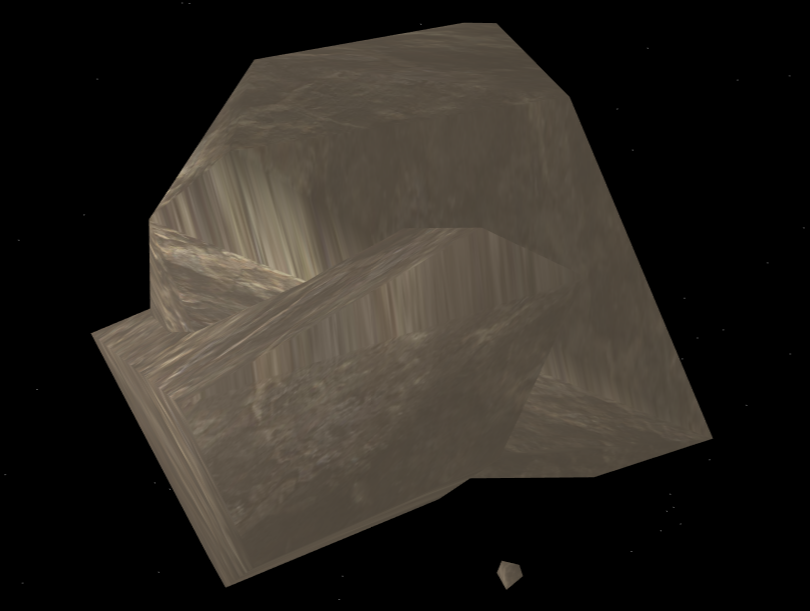
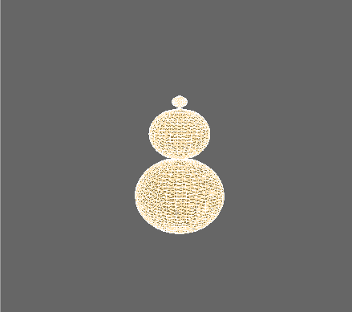
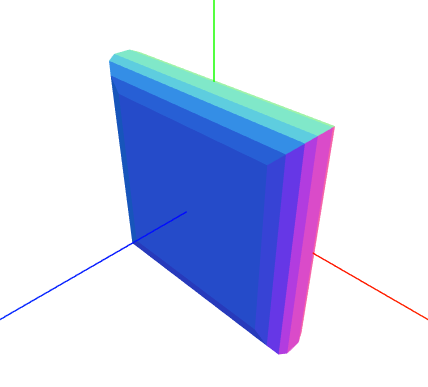
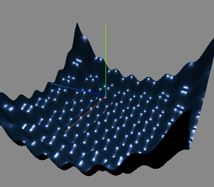

今天说说three.js的几何体，常见的几何体今天就不说了，今天说一说如何画直线，圆弧线，以及高级几何体。
画直线我们使用THREE.Geometry()对象。
//给空白几何体添加点信息，geometry会把这些点自动组合成线。
var material = new THREE.LineBasicMaterial({color: 0x00ff00});
var geometry = new THREE.Geometry();
geometry.vertices.push(new THREE.Vector3(0,0,0));
geometry.vertices.push(new THREE.Vector3(10,10,10));
geometry.vertices.push(new THREE.Vector3(0,20,0));
var line = new THREE.Line(geometry, material);这样就在空间画出了一条折线。
画圆弧线我们借助THREE.ArcCurve()对象。这个对象有点类似于d3.js中的布局（layout），它的本质就是根据参数生成一系列点坐标，他有一些方法.getPoints()从圆弧线均匀获得圆弧上面点的坐标。下面是THREE.ArcCurve()的部分源码。
THREE.ArcCurve = function ( aX, aY, aRadius, aStartAngle, aEndAngle, aClockwise ) {
THREE.EllipseCurve.call( this, aX, aY, aRadius, aRadius, aStartAngle, aEndAngle, aClockwise );
};我们可以知道有6个参数，并且继承自THREE.EllipseCurve()。加下来我们来画圆弧。
var arc = new THREE.ArcCurve(0, 0, 30, 0, Math.PI * 2, true);
var points = arc.getPoints(1000);
var ring = new THREE.Geometry();
points.forEach(v => ring.vertices.push(new THREE.Vector3(v.x,0,v.y)));
var mat = new THREE.LineBasicMaterial({color: 0x999900});
var line = new THREE.LineLoop(ring, mat);注意points都是XY平面上面的点。最后使用THREE.LineLoop来绘制圆弧线。
什么是凸包？简单地说凸包就是，在空间中每三个不在一条直线的点都可以组成一个平面，如果空间中有一组点，那么会组成很多平面，如果平面不透明，我们只能看到最外层的若干个面，这个面组成的几个体就是凸包。

like this !（这个只是加了岩石纹理）
凸包使用起来非常简单
let asteroidMate = new THREE.MeshBasicMaterial();
let points = [];
let rad = Math.pow(Math.random(), 3) * ASTERIODRADIUS;
for(var j=0; j<30; j++) {
points.push(new THREE.Vector3(Math.random() * 10, Math.random() * 10, Math.random() * 10))
}
var asteroidGeom = new THREE.ConvexGeometry(points);
var asterMesh = new THREE.Mesh(asteroidGeom, asteroidMate);这就是30个点组成的随机凸包。大家可以试试用它来自定义图形或者制作随机图形。
旋转体就是将由一组点组成的线绕固定轴旋转形成的几何体，LatheGeometry有4个参数，第一个是points点数组，第二个是分段数，第三个是旋转开始角度，第四个是旋转角度。

ar points = [];
for(var i=-12; i<=10; i = i + 0.5) {
if(i < 0) {
console.log(Math.sqrt(36 - Math.pow(i + 6, 2)) * 1.2, i)
points.push(new THREE.Vector3(Math.sqrt(36 - Math.pow(i + 6, 2)) * 1.2, i))
} else if(i < 8 && i >= 0) {
console.log(Math.sqrt(16 - Math.pow(i - 4, 2)) * 1.2, i)
points.push(new THREE.Vector3(Math.sqrt(16 - Math.pow(i - 4, 2)) * 1.2, i))
} else {
console.log(Math.sqrt(1 - Math.pow(i - 9, 2)) * 1.2, i)
points.push(new THREE.Vector3(Math.sqrt(1 - Math.pow(i - 9, 2)) * 1.2, i))
}
}
var latheGeo = new THREE.LatheGeometry(points, 30, 0, Math.PI * 2);
latheMesh = createMesh(latheGeo);;拉伸几何体就是将一个几何体沿着Z轴拉伸形成的几何体。它的参数比较多但是不难理解。

var material = new THREE.MeshNormalMaterial();
var shapeGeomery = new THREE.Shape();
shape.moveTo(-10, -10);
shape.lineTo(10, -10);
shape.lineTo(10, 10);
shape.lineTo(-10,10);
shape.lineTo(-10, -10);
var geometry = new THREE.ExtrudeGeometry(shapeGeomery, {
amount: 2, //拉伸的深度
bevelThickness: 2, //斜角的深度
bevelSize: 3, //斜角的高度
bevelSegments: 30, //斜角分段数
bevelEnabled: true, //开启斜角
curveSegments: 12, //拉伸的段数
steps: 1 //沿深度方向的段数
})
var shape = new THREE.Mesh(geometry, material);这里注意几点，
1.ExtrudeGeometry()的第一个参数是一个shape对象，
2.区分一下这三个分段数，bevelSegments是斜角的分段，它影响斜角的光滑程度，curveSegments是拉伸曲线的段数，steps是沿深度方向的段数。
这个方法很简单，就是验证曲线拉伸成一根管，简单的东西直接上代码
var points = [];
for (var i = 0; i < controls.numberOfPoints; i++) {
var randomX = -20 + Math.round(Math.random() * 50);
var randomY = -15 + Math.round(Math.random() * 40);
var randomZ = -20 + Math.round(Math.random() * 40);
points.push(new THREE.Vector3(randomX, randomY, randomZ));
}
var tubeGeometry = new THREE.TubeGeometry(new THREE.SplineCurve3(points), 64, 3, 16, false);
var meshMaterial = new THREE.MeshBasicMaterial({color: 0x00ff00, transparent: true, opacity: 0.2});
var tubeMesh = new THREE.Mesh(tubeGeometry, meshMaterial)这里只需注意TubeGeometry()的第一个参数是一个SplineCurve3对象，需要将三维点数组用SplineCurve3处理成三维曲线。
这个东西类似于高数中的参数方程，通过三阶等式来创建空间曲面,使用ParametricGeometry()的时候，我特意使用了v69版本和v104两个版本，使用方法是不同的。下面我们从代码中寻找区别。

// v69
var oldVersion = function (u, v) {
var x = u * 50 - 25;
var z = v * 50 - 25;
var y = Math.sin(u * 50 - 25) + Math.sin(v * 50 - 25) + Math.pow((Math.pow((u - 0.5), 2) + Math.pow((v - 0.5), 2)) * 10, 2) - 10;
return new THREE.Vector3(x, y, z);
};
var geometry = new THREE.ParametricGeometry(oldVersion, 120, 120)var newVersion = function (u, v, target) {
var x = u * 50 - 25;
var z = v * 50 - 25;
var y = Math.sin(u * 50 - 25) + Math.sin(v * 50 - 25) + Math.pow((Math.pow((u - 0.5), 2) + Math.pow((v - 0.5), 2)) * 10, 2) - 10;
target.set(x,y,z);
};
var geometry = new THREE.ParametricGeometry(newVersion, 120, 120)可以看出方法中传递了第三个参数，这里使用set方法做了优化，（所以说每当出现新的js标准后，都出新生一些框架或者出现新版本）。相信喜欢数学的小伙伴都会非常喜欢这个几何体。下面随便展示一个demo
### 8. 组合网格
未完待续。。。（这将是一个非常有意思的几何体）
### 9. Geometry()实现自定义面
未完待续。。。（同样可以很发散）
更多demo请移步至原文
转载请注明原文地址 http://www.bettersmile.cn 郭志强的博客